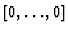
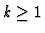
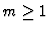
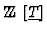
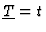
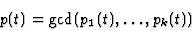
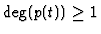
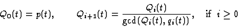
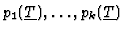

, is presented in the following way:
,
and the pi's and the qi's are polynomials in
non constant. In what follows it is showed how the description of every condition can be simplified.In the case of one parameter,

, if

then by defining iteratively
In the case of several parameters, it is clear that the same approach can not be further followed but several heuristics can be adopted in order to simplify the output:

with respect to any monomial ordering is equal to 1 then the corresponding condition is discarded.